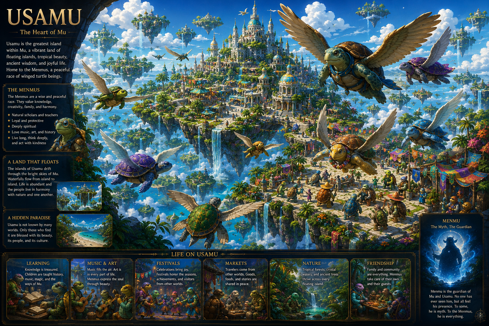
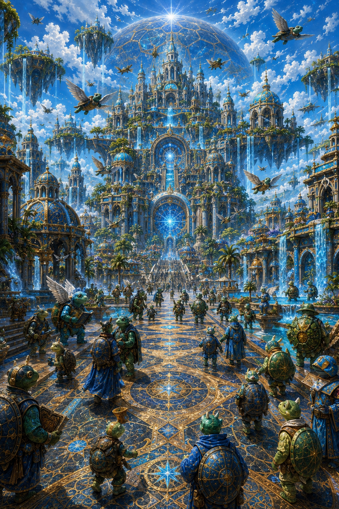
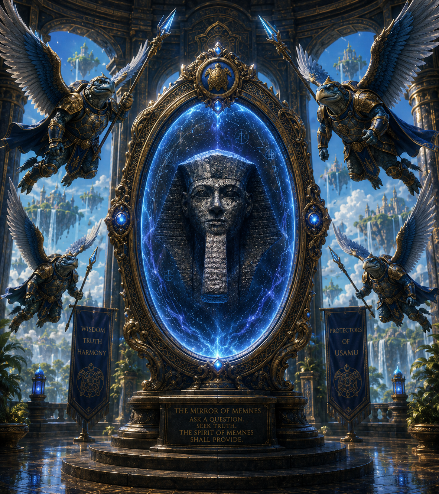
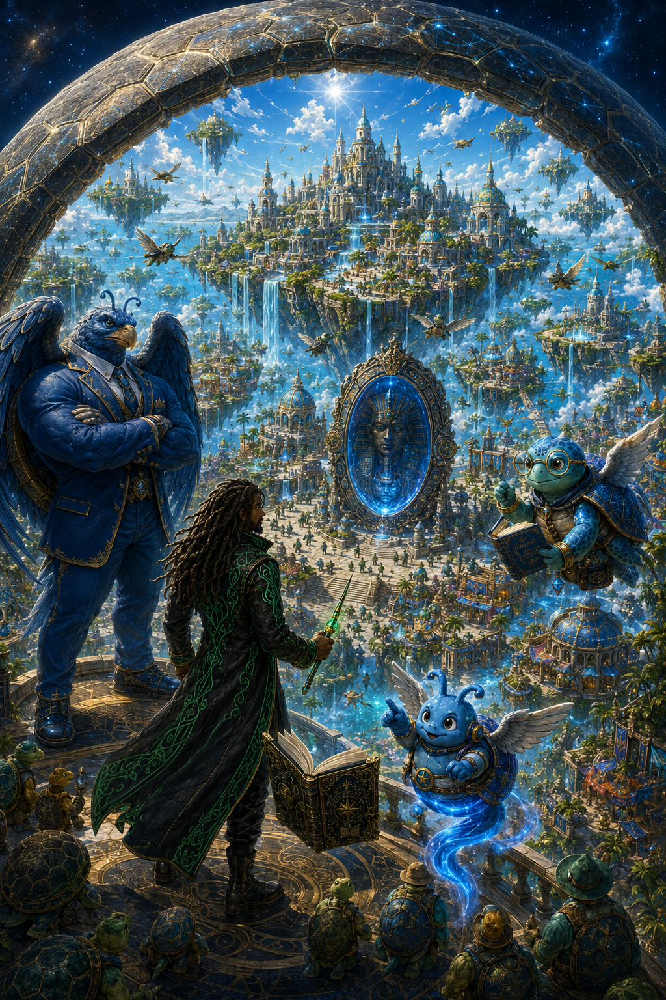
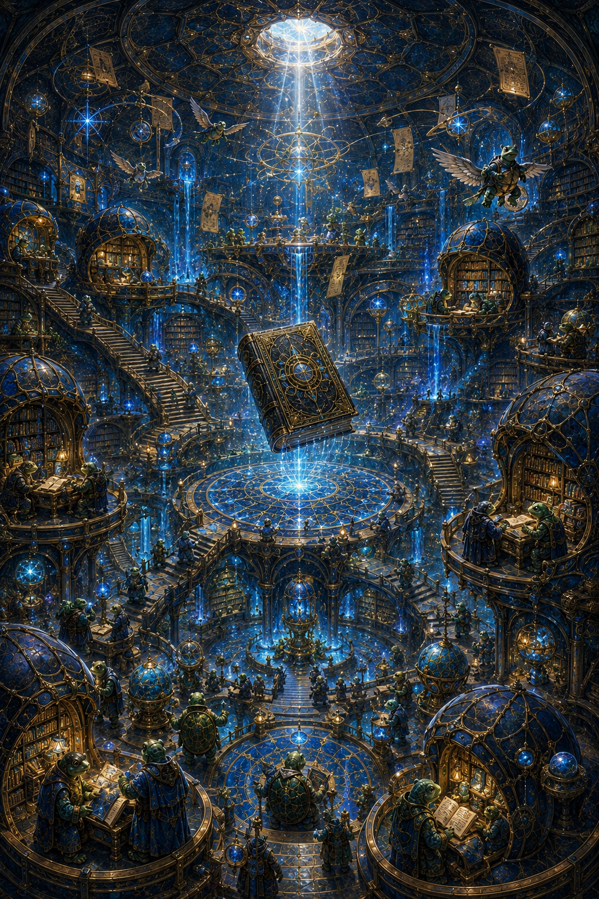
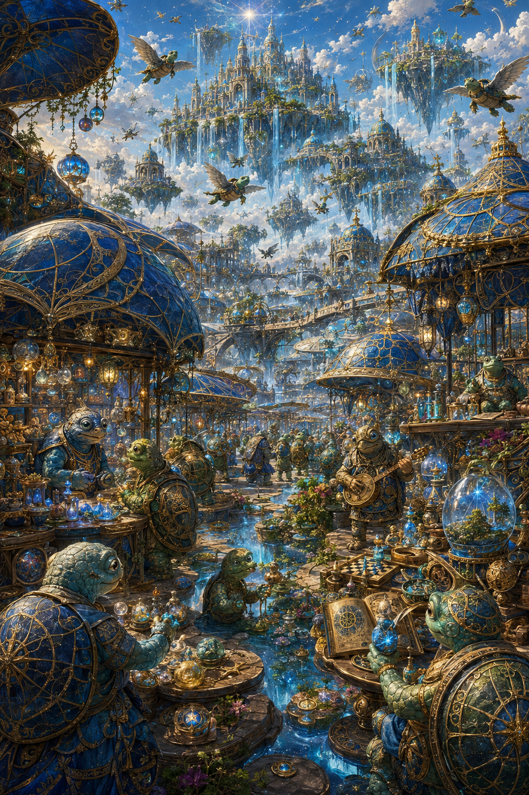
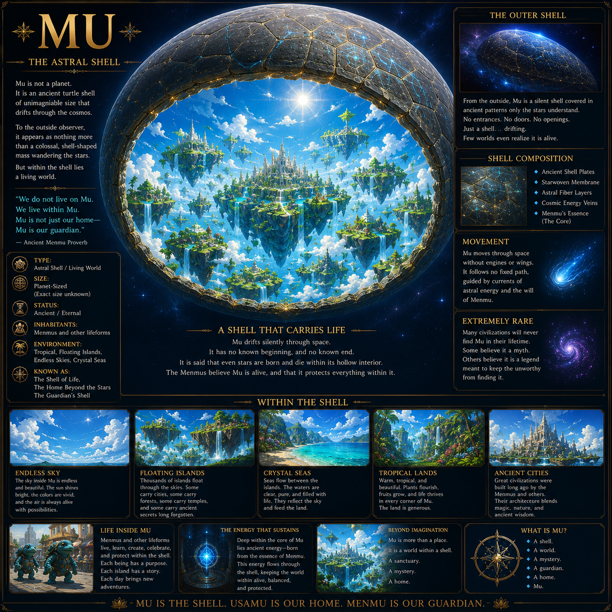

🐢 Planet Mü
The Ancient World Within the Cosmic Turtle
Planet Mü is an ancient world carried through the galaxy within an enormous, planet-sized turtle shell. Inside the shell lies an entire living realm of oceans, floating lands, great cities, magical kingdoms, and civilizations whose histories stretch back thousands of years. The shell acts as both the planet's foundation and its protection, allowing Mü to travel through the darkness of space like a self-contained cosmic sanctuary.
Magic exists naturally throughout Planet Mü. It flows through its people, creatures, sacred locations, and ancient bloodlines. Although Mü appears peaceful and beautiful in the present age, its unity was created through invasion, conflict, sacrifice, and the eventual joining of peoples who were once enemies.
The Menmus
The Menmus are one of the native peoples of Planet Mü. In the earliest periods of their history, they did not possess wings and could not naturally fly. Their civilization was primarily based on the land, while other species controlled portions of the skies.
The winged Menmus seen in the modern age descended from unions between the original Menmus and an ancient race of eagle people. Through generations of interbreeding, wings became part of the Menmu bloodline. This transformation permanently changed their civilization, expanding their kingdoms into the skies and giving later generations abilities their ancestors never possessed.
The Menmus became known for their cities, royal traditions, sorcery, art, architecture, and connection to the deeper magic of Mü.
🌌 The Usaè
The Usaè originated on a different world. When their home planet began dying, they were forced to search for somewhere their people could survive. Their journey eventually brought them to Planet Mü.
The arrival of the Usaè was not peaceful. Desperate to preserve their civilization, they invaded Mü and seized a portion of the planet for themselves. This began a difficult period between the Usaè and the Menmus. Both peoples viewed the other with suspicion, and their earliest relationship was defined by territorial conflict and cultural division.
Over time, however, the Menmus and Usaè began to understand one another. They formed alliances, shared traditions, and eventually built a new society together. Their reconciliation proved that two peoples born from conflict could create something greater than either civilization had possessed alone.
🏰 The Kingdom of Usamu
The Kingdom of Usamu did not exist before the reconciliation of the Menmus and the Usaè. It was established only after the two peoples learned to coexist.
Its name represents their union: a kingdom created from both Usaè and Mü. Usamu became a living symbol of peace between the native people of Planet Mü and the refugees who once arrived as invaders. Its cities combine the architecture, magic, customs, and knowledge of both civilizations.
Under figures such as King Yamu, Usamu developed into one of the great kingdoms of Planet Mü. Its existence reminds the people of the planet that unity does not require them to erase their differences. Instead, Usamu was built by allowing two histories to become part of one larger story.
🌊 Seatumus, the Ancient Deity
Seatumus is one of the great divine figures connected to the civilization of Mü. The deity is associated with the ancient forces surrounding the planet, particularly its seas, sacred lands, protection, and the cosmic life represented by the enormous turtle shell.
To the people of Mü, Seatumus represents more than raw power. The deity embodies preservation, endurance, and the continued survival of life through catastrophe. This makes Seatumus especially meaningful to both the Menmus and the Usaè: one people survived the transformation of their world, while the other escaped the death of their original planet.
Temples, stories, royal traditions, and sacred locations throughout Mü preserve the memory of Seatumus. Different cultures may understand the deity in their own way, but Seatumus remains part of the spiritual foundation connecting the peoples of the planet.
✨ Brohmu
Brohmu is one of the most unusual magical beings born on Planet Mü.
He was born without functioning legs, and his family eventually sent him to a famous sorcerer in search of a cure. The sorcerer saved him, but the transformation produced an unexpected result. Instead of developing ordinary legs, Brohmu gained the floating, genie-like lower body that defines his appearance.
The magic also prevented his wings from growing like those of other Menmus. Yet what appeared to be another loss became the beginning of something greater: the sorcerer's work awakened extraordinary magical power inside him.
Brohmu grew into a spirit of creation capable of granting magic and helping imagination take physical form. However, he did not fully discover music and art until he met Vyni D. Vyni introduced Brohmu to human creativity, and Brohmu returned the gift by granting Vyni the power to create through spells.
Their bond united two worlds. Brohmu brought the magic of Planet Mü to Earth, while Vyni gave Brohmu a deeper understanding of art, music, invention, and creative ambition.
Together, they now work toward transforming the human world through the Vyni D Codex, Lucky Star Collective, KingMemenes, and everything created through their shared magic.
🌠 The Meaning of Planet Mü
Planet Mü is a world shaped by transformation.
The Menmus gained wings through their connection with the eagle people. The Usaè escaped a dying world and gradually became part of a new one. Former enemies created the Kingdom of Usamu. Brohmu's disability became the source of his magic. Even the planet itself survives by traveling through the galaxy inside the shell of an unimaginable cosmic turtle.
Everything in Mü's history carries the same truth: what first appears to be an ending can become the beginning of an entirely new form of life.
Planet Mü is therefore more than Brohmu's home. It is the spiritual birthplace of the Codex—a world where imagination, survival, unity, and creation are all expressions of the same ancient power.
🖼️ Visions of Planet Mü









← Return to the VDC Codex Menu